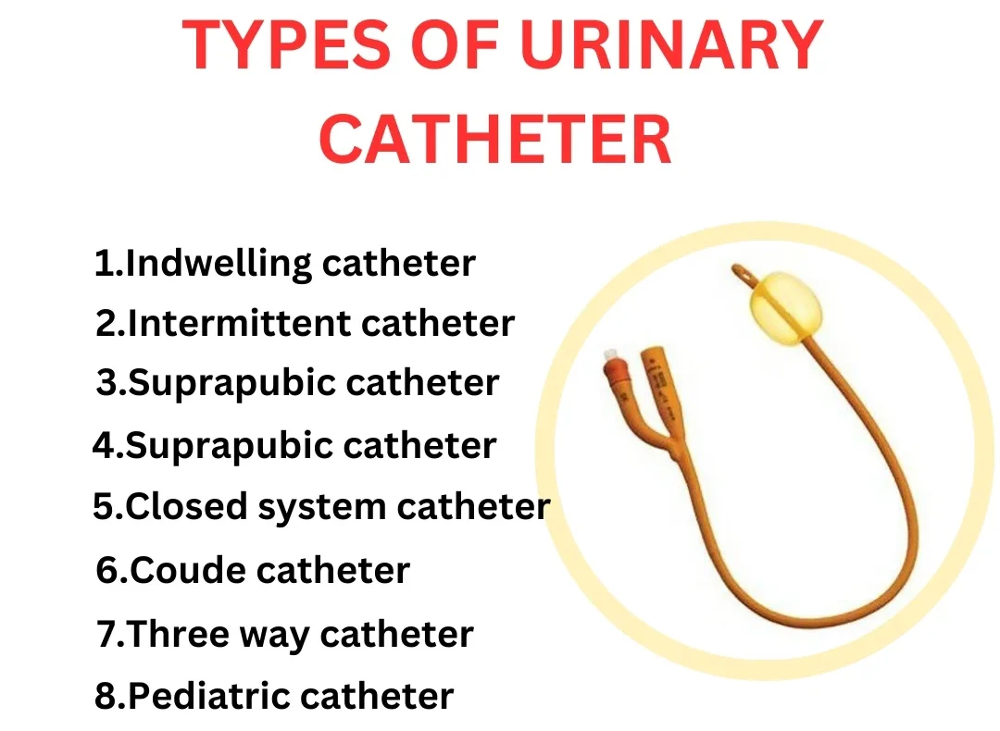
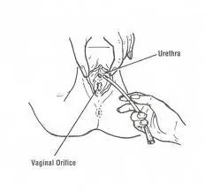
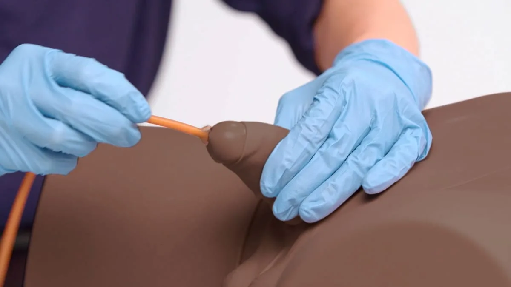

Expanded Nursing Uganda Explanation
Catheterization should be reviewed through safe maternal and newborn assessment, early recognition of danger signs, respectful communication and timely referral. Connect the definition to vital signs, bleeding, fetal or newborn wellbeing, patient education and local protocol requirements.
01 Objectives:
- Define the term catheterization .
- Name the types of catheters according to: Nature of procedure done (e.g., intermittent, indwelling)
- Types of catheter (e.g., non-retaining, self-retaining, metallic, non-metallic, rubber, plastic)
- State the indications for catheterization.
- Identify the requirements for passing a urethral catheter.
- Prepare the requirements for passing a urethral catheter.
- Perform the procedure of passing a urethral catheter.
02 Definition:
Catheterization is the introduction of a fine plastic or rubber tube (catheter) through the urethra into the urinary bladder in order to remove urine or to keep the urethra open.
03 Types of Catheters:
- Non-retaining or self-retaining (e.g., Foley catheter with inflatable balloon).
- Metallic and non-metallic (e.g., plastic, rubber, silicone).
- Rubber catheters.
- Plastic catheters.
Catheter sizes are according to the French (Fr) scale . Sizes include 8 to 10 Fr for children, 14 to 16 Fr for adult females, and 18 to 20 Fr for adult males. Generally, sizes range from 8 to 24 Fr. The smallest effective size should be used to minimize trauma.
04 Indications for Catheterization:
- To obtain a sterile specimen of urine for examination or investigations (e.g., when a clean catch midstream sample is not possible).
- To relieve urinary retention when other nursing measures have failed (e.g., after surgery, due to obstruction, or neurogenic bladder).
- To ensure that the bladder is empty before (pre-operatively), during, and after pelvic or abdominal surgeries to prevent injuries to the bladder.
- To measure the amount of residual urine after voiding (post-void residual). It is done when partial obstruction of the bladder outlet is suspected (e.g., in BPH, VVF patients, patients on bladder training).
- Emptying the bladder before giving a bladder irrigation or installation of medication .
- Splinting the urethra following urethral surgery or trauma.
- In cases of incontinence of urine to prevent bed sores which may occur in diseases of the nervous system, trauma, and other conditions requiring strict intake and output monitoring.
- Monitoring accurate hourly urine output in critically ill patients.
05 Requirements:
Trolley (Top Shelf):
- A sterile catheterization pack containing: Sterile towels (2), Drape (1), Sterile receiver (2), Gauze swabs, Cotton wool swabs.
- Sterile Foley catheter (appropriate size, have a spare)
- Sterile KY Jelly or Lubricant (water-soluble)
- Antiseptic solution (e.g., Povidone-iodine or Chlorhexidine solution) in a gallipot
- A 10 ml syringe (for inflating the balloon)
- Sterile water (or normal saline) for inflating the balloon (amount specified on catheter)
- Specimen bottle(s) with labels (if specimen is required)
- Spigot or clamp
- Drainage bag and tubing (if inserting an indwelling catheter)
- Dressing mackintosh and towel
- Sterile gloves (at least 2 pairs)
- Non-sterile gloves (for initial preparation)
Bedside:
- Hand washing equipment (access to sink, soap, water, towel)
- Screens (for privacy)
- Adequate lighting (e.g., torch or lamp)
- Waste receptacle
- Urine collection container (if not using a drainage bag, e.g., receiver or measuring jug)
- Patient's chart and Fluid balance chart (if monitoring output)
06 Procedure (Catheterization of a Female Patient):
- Steps Action Rationale
- 1. Observe the general rules . Promotes adherence to standards .
- 3. Assist the patient to adopt the dorsal recumbent position (lying on back with knees flexed and spread apart). Dorsal position makes it easy for the nurse to carry out the procedure by exposing the meatus.
- 4. Place the dressing mackintosh and towel under the patient's buttocks. To protect the bed linen from urine spillage .
- 5. Wash hands and put on clean non-sterile gloves . Open the outer wrapper of the sterile catheterization pack and place on the trolley. Open sterile gloves and place on the trolley. Prevents infection and prepares the sterile field.
- 6. Pour antiseptic solution into a gallipot. Open sterile catheter and place on the sterile area. Draw up sterile water/saline into the syringe for balloon inflation. Lubricate the catheter tip (about 2-4 cm). Maintains sterility and prepares the catheter for insertion.
- 7. Remove non-sterile gloves and wash hands . Put on sterile gloves . Maintains sterile technique .
- 8. Drape the patient's genitalia , exposing the urethral orifice. Place a sterile receiver on the drape between the patient's thighs to collect urine. To create a sterile field and prepare for urine collection.
- 9. Separate the labia with the thumb and index finger of the non-dominant hand to visualize the urethral meatus. Maintain separation throughout the procedure (this hand is now contaminated). To visualize the meatus clearly and prevent contamination from the labia.
- 10. Clean the urethral meatus thoroughly with cotton wool swabs soaked in antiseptic solution , using the forceps. Wipe from anterior to posterior (front to back), using a fresh swab for each stroke. Clean from the meatus outwards. Discard used swabs. To prevent the introduction of microorganisms into the bladder.
- 11. Using the dominant hand (which is sterile), gently insert the lubricated catheter tip into the urethral meatus. Advance the catheter slowly 4-6 cm until urine begins to flow into the receiver. Lubrication minimizes trauma to the urethra. Gentle insertion prevents injury . Length ensures entry into the bladder.
- 12. Once urine flows, advance the catheter a further 2-3 cm to ensure the balloon is fully within the bladder. Hold the catheter in place with the non-dominant hand. To ensure the balloon is not inflated in the urethra , which would cause pain and damage.
- 13. Inflate the balloon slowly with the pre-drawn sterile water/saline using the syringe. The amount is specified on the catheter (usually 5-10 ml for adult Foley). To secure the catheter in the bladder and prevent it from slipping out.
- 14. Gently pull back on the catheter slightly until resistance is met, indicating the balloon is seated at the bladder neck. Confirms correct placement and anchors the catheter.
- 15. Connect the catheter to the drainage bag and tubing system , ensuring a closed system . Ensure the drainage bag is positioned below the level of the bladder . To allow continuous drainage of urine and maintain a closed sterile system to prevent infection .
- 16. Secure the catheter to the patient's inner thigh with adhesive tape , allowing for some slack to prevent tension on the meatus. Prevents accidental dislodgement and irritation of the urethra.
- 17. Dispose of used equipment and materials appropriately. Wash hands . Maintains cleanliness and infection control.
- 18. Leave the patient comfortable and check that urine is draining freely into the bag. Provide post-procedure care and instructions to the patient (e.g., signs of infection, hydration). To ensure patient comfort and well-being and prevent complications .
- 19. Document the procedure, including the date, time, type and size of catheter inserted, amount of fluid used to inflate the balloon, characteristics and amount of urine obtained (if initial drainage), patient's response, and name/signature of nurse. For continuity of care , monitoring, and legal record .
07 Procedure (Catheterization of a Male Patient):
- Steps Action Rationale
- 1. Follow the general steps for catheterization preparation as for a female patient (Steps 1-7 Female Procedure), including explaining the procedure, ensuring privacy, preparing equipment, and washing hands/donning sterile gloves. The principles of catheterization preparation remain the same in both male and female patients.
- 2. Assist the patient to lie in the supine position with legs extended. Drape the patient's genitalia , exposing the penis. To provide privacy and easy access to the penis.
- 3. Using the non-dominant hand (now contaminated), grasp the penis just below the glans and retract the foreskin if uncircumcised. Hold the penis perpendicular to the body. To expose the urethral meatus and straighten the urethra for easier catheter passage.
- 4. Cleanse the glans penis with cotton wool swabs soaked in antiseptic solution , using the forceps. Wipe in a circular motion from the meatus outwards, using a fresh swab for each stroke. Discard used swabs. Maintain hold of the penis with the non-dominant hand. To prevent the introduction of microorganisms into the bladder.
- 5. Lubricate the tip of the catheter (about 6-8 inches) and inject some lubricant directly into the urethra using the syringe (or use a pre-lubricated catheter). Lubrication minimizes trauma and friction and helps the catheter pass through the longer male urethra.
- 6. Using the dominant hand (which is sterile), gently insert the lubricated catheter tip into the urethral meatus. Ask the patient to take slow, deep breaths or bear down gently as if to void, and advance the catheter slowly. Deep breathing helps relax the external sphincter . Gentle insertion follows the natural curves of the urethra.
- 7. Advance the catheter about 15-20 cm until urine flows into the receiver. The male urethra is longer than the female. Ensures the catheter reaches the bladder .
- 8. If resistance is met, do not force . Ask the patient to relax and breathe deeply. Gently rotate the catheter or apply slight traction to the penis. If resistance persists, withdraw the catheter and consult the mentor or doctor . Forcing can cause trauma , stricture , or false passages in the urethra. Relaxing can help the sphincters open.
- 9. Once urine flows, advance the catheter a further 2-3 cm to ensure the balloon is fully within the bladder. To ensure the balloon is not inflated in the urethra .
- 10. Inflate the balloon slowly with the pre-drawn sterile water/saline using the syringe. Amount specified on catheter (usually 5-10 ml for adult Foley). To secure the catheter in the bladder.
- 11. Gently pull back on the catheter slightly until resistance is met. Confirms correct placement .
- 12. Replace the foreskin if it was retracted. To prevent paraphimosis (foreskin trapped behind the glans).
- 13. Connect the catheter to the drainage bag and tubing system , ensuring a closed system . Ensure the drainage bag is below the level of the bladder . To allow continuous drainage and maintain a closed sterile system.
- 14. Secure the catheter to the patient's inner thigh or lower abdomen with adhesive tape , allowing for some slack. Securing to the abdomen directs the catheter upwards, reducing pressure on the penoscrotal angle of the urethra. Prevents accidental dislodgement and tension on the meatus.
- 15. Complete the procedure as per steps 17-19 of the female catheterization procedure (Dispose of equipment, Wash hands, Patient comfort, Documentation). Maintains cleanliness , ensures patient comfort, and provides a record.
08 Points to Remember (Catheterization):
- Catheterization is a sterile procedure ; therefore, strict aseptic precautions must always be followed throughout the procedure. Any break in sterile technique should be corrected immediately.
- The procedure should be performed with extreme care to prevent trauma to the delicate urethral and bladder organs.
- Always verify catheter placement before inflating the balloon.
- Never force the catheter against resistance.
- Use adequate lubrication , especially for male patients.
- Choose the correct size catheter to minimize discomfort and trauma.
- Ensure the drainage system is always below the level of the bladder to facilitate gravity drainage and prevent backflow.
- Provide ongoing catheter care (cleaning meatus, checking drainage, ensuring patency) to prevent infection .
- Monitor the patient for signs of complications such as pain, bleeding, inability to pass urine, or signs of infection (fever, cloudy urine, foul odor).
09 Nursing Uganda Clinical Lens
Use Catheterization as a practical nursing topic, not only a memorized definition. Prioritize airway, breathing, circulation, pain, asepsis, wound healing and early complication detection.
- What to understand first: define catheterization, identify the normal or expected pattern, then explain what changes when the patient is unwell.
- Why it matters in care: the nurse must recognize risk early, explain findings clearly, document accurately and know when to escalate.
- How to revise it: connect each point to assessment, nursing diagnosis or care problem, intervention, rationale and evaluation.
10 Assessment Guide
- Vital signs, pain, bleeding, perfusion, level of consciousness and injury pattern.
- Wound appearance, drainage, odour, swelling, temperature and surrounding skin.
- Fluid balance, mobility, nutrition, surgical site risk and ordered investigations.
11 Nursing Priorities, Rationales and Outcomes
- Stabilize urgent problems first, then prepare for investigations or theatre care.
- Maintain aseptic technique, pain control, wound care and documentation.
- Prevent shock, infection, pressure injury, deep vein thrombosis and delayed healing.
The rationale for these priorities is patient safety: nursing actions should prevent deterioration, reduce discomfort, support recovery and create clear evidence for the next caregiver.
- Expected outcome: The patient remains stable, wound healing progresses, pain is controlled and complications are recognized early.
12 Patient Teaching and Revision Check
- Explain catheterization in simple language the patient or caregiver can repeat back.
- Teach warning signs, medicine or follow-up instructions, hygiene or lifestyle points where relevant.
- For exams, prepare a short answer using: definition, causes or risk factors, signs, assessment, management, complications and prevention.
- For ward practice, document baseline findings, actions taken, patient response and the plan for review.
Illustrations and Diagrams (4)



Related Video Lectures
Watch nursing lecture videos on YouTube for this topic. Opens in a new tab.
Watch on YouTubeExternal link: YouTube may use its own cookies and terms. Nursing Uganda is not affiliated with YouTube.